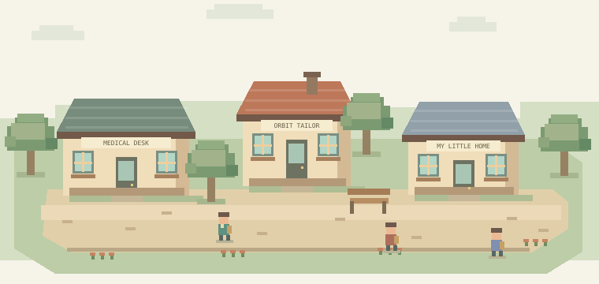

MEDICAL QUEST · A COZY LIFE RPG
몸속으로 모험을.
일상에는 나만의 이야기.
인체를 탐험하고, 발견을 기사로.
열심히 번 돈으로 새 옷과 작은 집까지.
알아가는 즐거움과 살아가는 재미가 만나는 세계.

ART DIRECTION STUDY · 최종 게임 화면이 아닙니다게임을 하다 보니,
어느새 설명할 수 있게.
정답을 맞혀야 입장하는 게임보다, 직접 움직이고 관찰하며 원리를 발견하는 RPG를 만듭니다. 전투 대신 탐험과 퍼즐, 점수 대신 내 기사와 성장한 공간이 남습니다.
현재는 설계 단계입니다.아래 인터랙션은 방향을 살펴보는 미리보기입니다.
01 / YOUR REPORTER
첫 페이지는
당신답게.
인간 남성, 인간 여성, 외계생명체.
누구로 시작해도 같은 모험과 기회가 열립니다. 의상은 능력치가 아닌 나를 표현하는 선택입니다.
오늘의 취재복 색상
오늘의 첫 취재가 기다리고 있어요.
02 / THE WORLD WITHIN
우리 몸 전체가,
하나의 탐험 세계.
심장부터 눈, 치아, 손끝과 세포까지.
지도는 넓어지고, 지식은 연결됩니다.
정보는 처음부터, 심화 탐험은 차근차근.
157개 구조·관찰 주제의 기획 목록입니다. 의학 콘텐츠 검수 완료나 인체의 전체 구조 수를 뜻하지 않습니다.
03 / GROW AT YOUR OWN PACE
레벨은 99까지.
호기심은 그 너머로.
기자 경험, 분야 숙련, 개념 이해는 따로.
레벨을 움직여 각 구간의 하루를 살펴보세요.
04 / A LIFE OF YOUR OWN
좋은 기사를 쓴 날,
나에게 작은 선물.
무료 숙소에서 시작해 작은 내 집으로.
돈을 모두 꾸미기에 써도 취재는 계속됩니다.
무엇을 먼저 갖고 싶은지는 당신의 선택.
취재 수입 2,270 G
기획 수치 미리보기 · 실제 결제나 구매 없음
어떤 선택에서도 필수 취재는 무료로 진행합니다.
05 / THE DESIGN LIBRARY
이 세계의 설계도를
한 장씩 펼쳐보세요.
전체 설계 원문을 읽을 수 있습니다. 검색은 제목과 본문을 함께 찾습니다.
06 / ONE STEP AT A TIME
한 번에 작은 세계부터.
함께, 끝까지.
지금설계 v0.2 · 웹 설계실설계 중
2.5D·캐릭터·생활·전신·기자 커리큘럼과 단계별 기준을 정리합니다. 이 페이지는 진행할 방향을 보여줍니다.
P0–P2기준 아트와 첫 10분다음
종이 프로토타입 → 이동·저장 → 3종 캐릭터 → 기준 아트 → 첫 심장 취재 → 첫 기사와 무료 외형 선물. 재미와 조작을 먼저 확인합니다.
P3–P4수습 기자와 작은 내 집계획
Lv.10, 심장7구역, 첫 승진. 옷가게·옷장·가구·첫 주택과 경영을 연결하고 콘텐츠 제작 단가를 측정합니다.
P5–P6전신으로 넓어지는 세계계획
Lv.30 → Lv.60. 12허브의 주요 입문, 기관별 다른 조작, 기자 가이드, 동네 생활 확장, 의학 검수와 저장 이행.
P7–P9Lv.99, 그리고 나만의 특집호계획
심화 취재·편집·통합 기획·후일담. 출시 검증 후 새로운 근거와 콘텐츠를 꾸준히 갱신합니다.